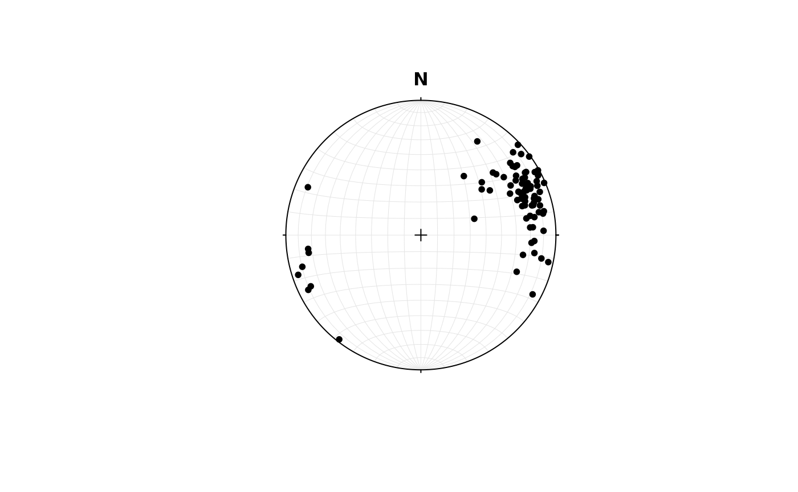
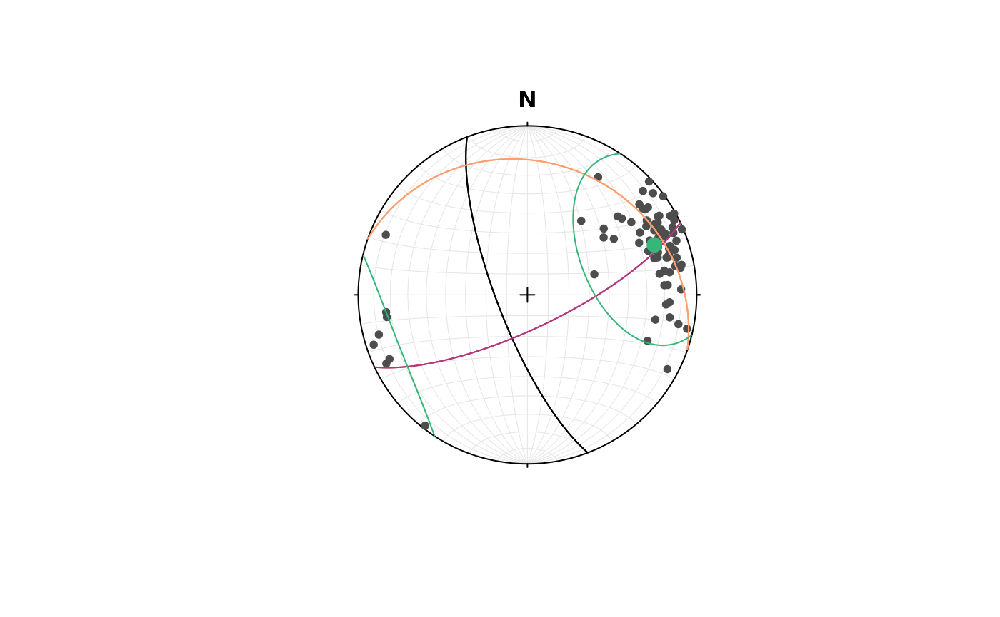

When working with orientation data you must:
- Define the type of orientation data you have measured
- Figure out what you want to do
- Describe the orientation data
- Visualize your findings
Prerequisites
Before you start you need to have R and and R-compatible IDE installed on your computer:
You will need R installed on your computer. You can download R from the CRAN website: https://cran.r-project.org/
Once you downloaded and successfully installed R, you can use R in your preferred IDE. I recommend installing and using RStudio. However, Positron and VisualStudio are also great alternatives. You are also allowed to use R’s native GUI or use R in your terminal only.
Open your IDE and now you can install the {structr} package by typing into the commando console the following code. This will install the package and every required library as well.
Next you must “load” the library to use the functions of {structr}:
Import
The first thing you usually need to do is importing your orientation data. This can be done in several different ways depending on your preferences. For example, RStudio has a GUI that allows to import data without using R commandos (File > Import Datasets).
You can also use one of the below functions to import data:
To use your data directly from a Strabospot project, download the
json file and import it using the read_strabo_JSON()
function.
This returns a list which contains all the information and metadata
(including coordinates, descriptions etc) extracted from the
StraboSpot project in the list element data, the
tags used for the project in the list element tags, and the
linear and planar orientation measurements in the list elements
lines and planes, respectively.
Data type declaration
Depending on the symmetry of the orientation data, different data types are used to represent orientations in 3D space. The main data types used in structural geology are Rays, Lines, Planes, Pairs, and Faults. Distinguishing these data types is important each the different symmetries imply different statistical assumption for their distribution. In other words the different data types require different statistical “treatments”. To learn more about it, follow this tutorial.
The data types can be generated using the object creator functions:
Vec3(), Line(), Plane(),
Ray(), Pair(), and Fault(). These
functions create spherical object, and {structr} will identify the
symmetry nature of the data in further function calls.
Equal-area projections
The spherical objects can be plotted in equal-area projections using
R’s primitive plotting functions, e.g. plot,
points(), and lines(), ….
# import some example lines
data(example_lines)
# plot lines in a equal-area projection
plot(example_lines)
More details on plotting spherical data in https://tobiste.github.io/structr/articles/Plots.html
Statistical estimators
There are plenty of different statistical parameters, which meaningfulness depend on the underlying distribution of the orientation data (and hence also on the symmetry of the data).
# Spherical arithmetic mean
lines_mean <- sph_mean(example_lines)
print(lines_mean)
#> Line object (n = 1):
#> azimuth plunge
#> 68.51277 20.49587
# Spherical arithmetic variance
sph_mean(example_lines)
#> Line object (n = 1):
#> azimuth plunge
#> 68.51277 20.49587
# Spherical standard deviation
lines_sd <- sph_sd(example_lines)
print(lines_sd)
#> [1] 40.06063Here, the spherical arithmetic mean and variance are computed. These values conveniently describe the distribution if we assume a von Mises-Fisher distribution of the data, which is the normal distribution analogue for line-like data. In many cases the geodesic mean and variance better describe the distribution of vectors. More details in the statistics tutorial.
Orientation tensor
The orientation tensor describes the distribution of all vectors in your dataset.
ortensor(example_lines)
#> Orientation tensor
#> [,1] [,2] [,3]
#> [1,] 0.16204564 0.2552464 0.08096582
#> [2,] 0.25524643 0.7382838 0.19306540
#> [3,] 0.08096582 0.1930654 0.09967054Eigenvalues and eigenvectors of this tensor describe the distribution.
lines_eigen <- ot_eigen(example_lines)
print(lines_eigen)
#> eigen() decomposition
#> $values
#> [1] 0.89044880 0.06736731 0.04218389
#>
#> $vectors
#> Line object (n = 3):
#> azimuth plunge
#> [1,] 69.09796 14.82125
#> [2,] 334.66510 16.28283
#> [3,] 199.26521 67.69500Summarize the statistical parameters in a equal-area projection:
# plot the data
plot(example_lines, col = "grey30")
# greatcircles associated with the eigenvectors
lines(lines_eigen$vectors, col = c("#000004FF", "#B63679FF", "#FE9F6DFF"))
# spherical mean and standard deviation cone
points(lines_mean, pch = 16, cex = 1.5, col = "#35B779FF")
lines(lines_mean, ang = lines_sd, col = "#35B779FF")
Here, the eigenvector are the intersection of the great-circles. Note how the spherical mean is quite similar to one eigenvector (the one associated with the greatest eigenvalue).